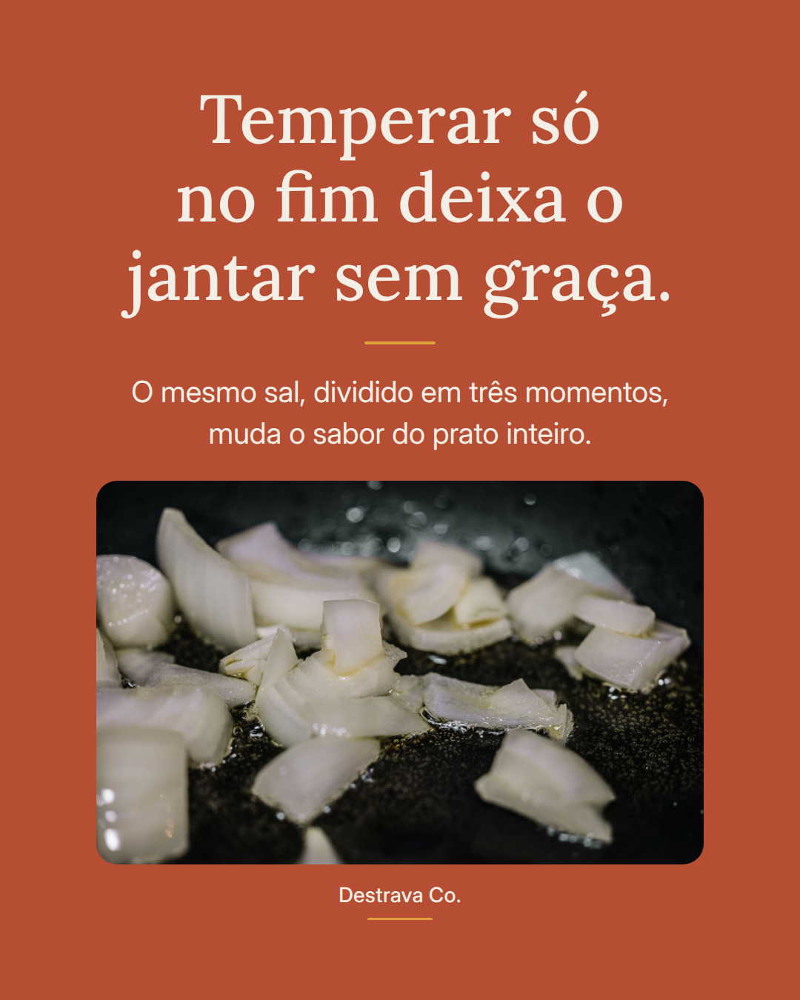

Tempero em camadas é o que separa o jantar sem graça do jantar gostoso, e não tem nada a ver com usar mais sal.
É o mesmo tanto, repartido em três momentos do preparo: no ingrediente cru, no refogado e no fim, com o fogo desligado.
Quando você joga tudo só no final, o sal fica por cima. A comida parece salgada na primeira garfada e sem gosto na terceira.
Repartindo, cada parte do prato fica temperada por dentro: a proteína, a base de cebola e alho e o caldo que se forma na panela.
E a última pitada, fora do fogo, é a que você controla melhor, porque aí já dá pra provar de verdade.
Salva pra lembrar na hora de cozinhar e manda pra quem sempre tempera só no fim. Se quiser receita pronta já nessa ordem, o PDF com 20 receitas rápidas está te esperando.